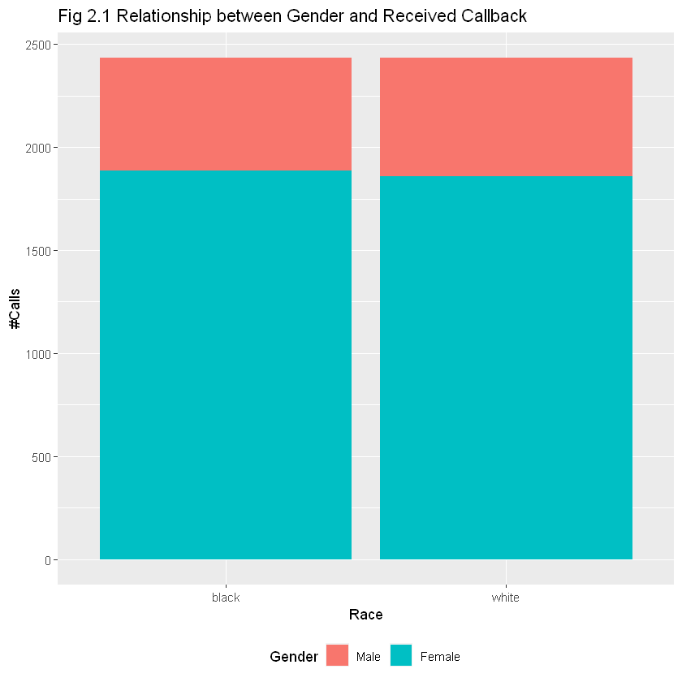
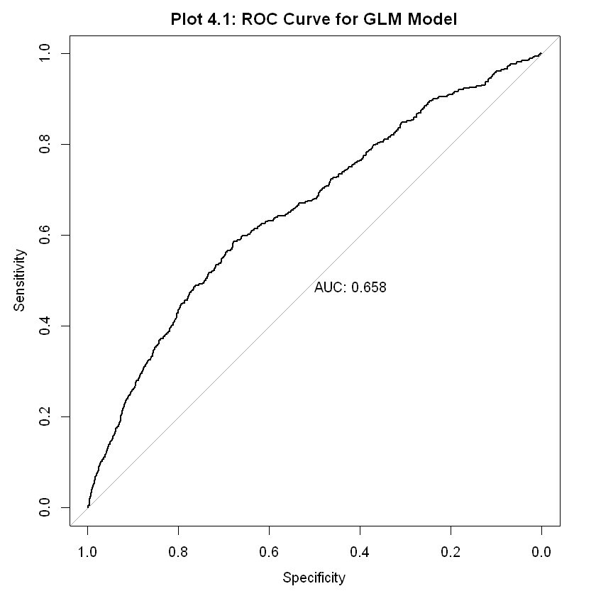

Data Analysis Assignment 02 - Resume Data
Model Documentation
Data Source and Dictionary: OpenIntro
This experiment data comes from a study that sought to understand the influence of race and gender on job application callback rates. The study monitored job postings in Boston and Chicago for several months during 2001 and 2002 and used this to build up a set of test cases. Over this time period, the researchers randomly generating resumes to go out to a job posting, such as years of experience and education details, to create a realistic-looking resume. They then randomly assigned a name to the resume that would communicate the applicant’s gender and race.
Research Question: How do race and gender influence job application callback rates?
1. Overview
The resume data in the OpenIntro Library is a dataset of Resumes that were used to apply for job profiles, and whether or not they recieved a callback. The resume dataset contains the following fields -
- Job Details - These include details such as City, Industry, Job Title, Private/Non Profit, required education, and required skills
- Applicant Details - Details about the applicant, such as Gender, Race, years of education, college degree, skills, and years of experience
- Resume Details - Details about the resume, such Email available, Resume Quality
- Callback - whether the applicant received a call back for this job posting for their resume (1 or 0) - this will be the dependent variable
The dataset will be used to train a logistic regression model to predict the probability of receiving an interview invite, given the gender and socioeconomic class of the applicant.
2. Data Cleaning and EDA
2.1: Data Cleaning
For variables that are stored as numeric 0 and 1 but are actually flags (computer_skills, job_req_any etc) - converting them to factors before feeding this to the model. The variables include -
gender- Gender (male or Female)resume_quality- Resume Quality (high or low)race- Race (black or white)job_equal_opp_employer- Whether the employer is an equal opportunity employer (0 or 1)job_fed_contractor- Whether employer is a federal contractor (0 or 1)job_req_any- Whether job has any requirements (0 or 1)job_req_communication- Whether job requires communication skills (0 or 1)job_req_education- Whether job requires education (0 or 1)job_req_computer- Whether job requires computer skills (0 or 1)job_req_organization- Whether job requires organization skills (0 or 1)honors- Whether applicant has honors (0 or 1)worked_during_school- Whether applicant worked during school (0 or 1)computer_skills- Whether applicant has computer skills (0 or 1)special_skills- Whether applicant has special skills (0 or 1)volunteer- Whether applicant is a volunteer (0 or 1)military- Whether applicant was in the military (0 or 1)employment_holes- Whether applicant has any gaps in employment (0 or 1)has_email_address- Whether resume has an email address (0 or 1)
2.2: Exploratory Data Analysis (EDA)
3. Modeling
We will be using this data to predict whether or not a callback was received, based on the provided data of job details, applicant details, and resume quality. This is an inference problem, so we are more interested in what variables are significant towards receiving a callback, rather than the accuracy of the model.
One major issue that we can face in this model is that of class imbalance, as only 392 out of 4,870 (~8%) job-resume combinations got a callback
Currently, Logistic Regression is a good choice for this problem due to a variety of reasons -
- Logistic Regression is a powerful tool for modeling the probability of a binary outcome
- It can be used to account for the effects of multiple independent variables on the outcome variable
- It is easier to interpret and explain to stakeholders
4. Results
Now that we have built a logistic regression model, we can assess the performance using the following metrics -
4.1 Assessing Model Performance - APR Metrics
[1] "Accuracy: 0.87"
[1] "Precision: 0.19"
[1] "Recall/Sensitivity: 0.2"
[1] "Kappa: 0.122426661470904"Accuracy: A model with an accuracy of 0.87 predicts the correct outcome 87% of the time. Note that Accuracy is not a good measure of model performance due to class imbalancePrecision: A precision of 0.19 predicts the positive outcome correctly 19% of the time when it predicts a positive outcome.Recall: A model with a recall of 0.2 correctly identifies 20% of the positive cases.Kappa: A model with a kappa of 0.12 has a fair agreement between the predicted and actual outcomes, after accounting for the possibility of agreement occurring by chance.
4.2 Assessing Model Performance - ROC Curve
Setting levels: control = 0, case = 1
Setting direction: controls < cases

An ROC of > 0.5 means that the model is better at predicting than chance. An ROC of 0.658 indicates that the model is able to predict the probability of a callback with reasonable accuracy.
5. Future Work
While the model can infer the most significant factors that resulted in recieving a callback, moving forward we can fix the class imbalance issue by using sampling methods.
This will lead to a better model that can predict whether a job-resume combination will get a callback or not